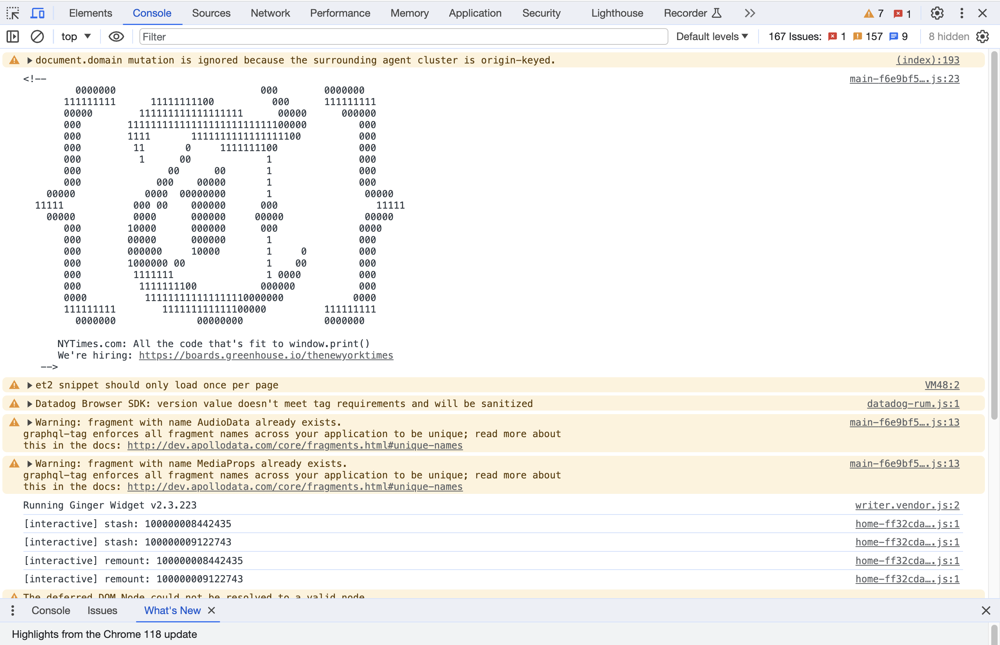
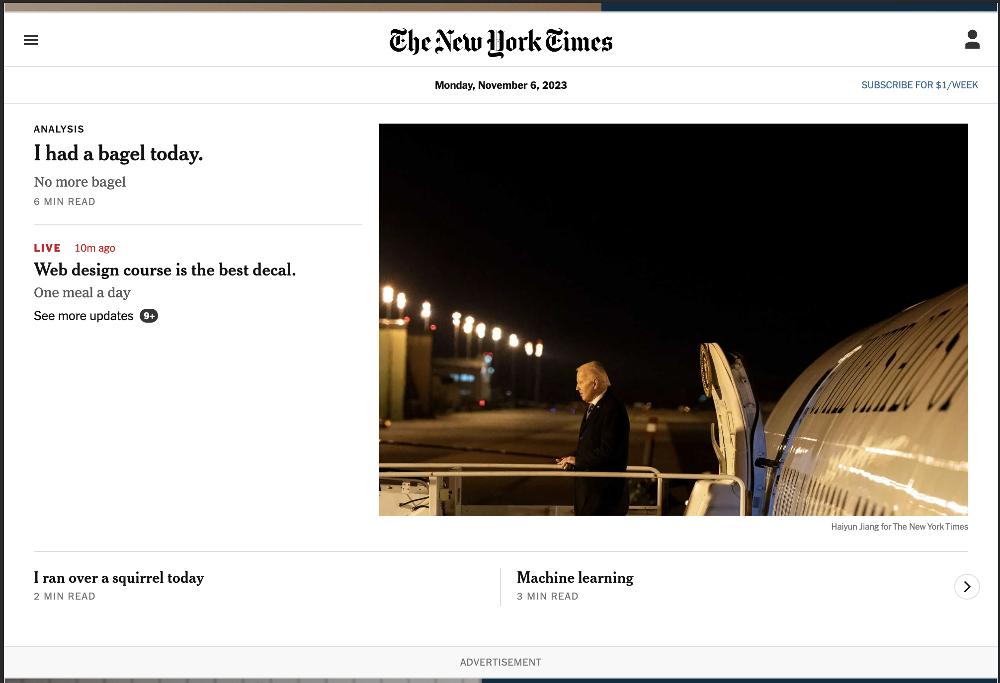

1. First, open up the "Inspect" panel in your browser (right click -> "Inspect") and scroll through the contents in the "Console" tab. It should say that the New York Times is hiring. What is the link to their website where the New York Times is listing their open positions?
Click here 2.Next, let's dig around and take a look at their styling. What font does the New York Times use for their headings?
For their headings, the use Engravers Old English BT font.
3.Now, let's switch over to the "Elements" tab in "Inspect". Change three of their headlines to three things that happened to you today.
4. Finally, take a screenshot of your browser and put it in your code submission. It should look something like this (with your own headlines, the logo should still say "The New York Times").